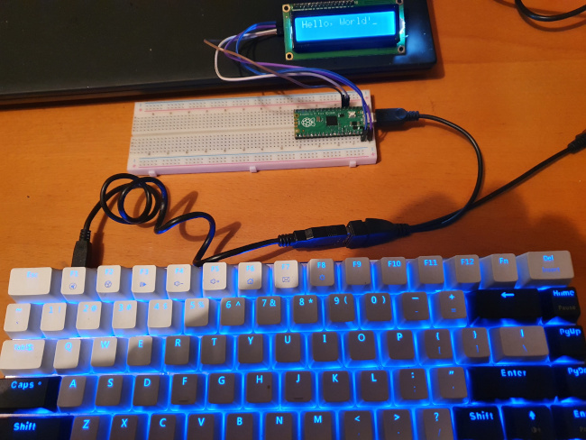

Some thoughts on using a USB keyboard with the Raspberry Pi Pico
 The Pi Pico has USB host support, and can work with a USB keyboard.
Such a keyboard makes a useful -- and cheap -- input device, although
using one has implications for project design and testing.
Moreover, although
there are some programming examples, the general approach to programming
USB host operations is not well documented.
The Pi Pico has USB host support, and can work with a USB keyboard.
Such a keyboard makes a useful -- and cheap -- input device, although
using one has implications for project design and testing.
Moreover, although
there are some programming examples, the general approach to programming
USB host operations is not well documented.
In this article I describe the basic operation of the TinyUSB library in the Pico C SDK. I also touch on the use of an LCD matrix for troubleshooting -- since the USB can't also be used for a diagnostic connection.
I'm only giving snippets of C source code in this article; full source code for the text application (with LCD display) is in my GitHub repository.
The article only covers HID devices, specifically keyboards, although mouse handling is almost identical. Whether it's possible to use something as complex as a USB mass storage device, I have no idea.
Note:
I'm assuming the use of the Pico C SDK. I'm also assuming that the build is controlled using CMake and CMakeLists.txt, as there isn't any documented alternative. Sadly.
Connection, and its implications
To connect a USB keyboard you'll need some kind of adapter, as keyboards are usually designed to plug into a type-A socket. The Pico has a micro-USB socket, and no type-A.
Both powered and unpowered adapters are available. There are often described as "OTG cables" or "OTG adapters", The powered version may be called a "USB Y adapter", but names vary. These devices are very cheap from on-line retailers.
A powered adapter will have a place to plug in an ordinary USB cable, which is connected to a 5V supply (or a computer's USB socket). If you're using an unpowered adapter, you'll need to find some other way to power the Pico board -- typically by connecting a 5V supply the Vsys pin.
As the Pico has only one USB port, using it for a keyboard prevents it being used to connect to a computer for diagnostic purposes. We can't connect the USB port to a host computer and use a terminal emulator, for example.
One way around this problem is to use the Pico's non-USB UART as the diagnostic port. To do this you'll need a 5V serial-to-USB converter, or to connect the UART to some other device that works with 5V serial data (e.g., a full-sized raspberry Pi).
A simple approach to getting diagnostic data is to send it to an LCD display attached to the Pico. This is particularly appropriate if your application calls for a display anyway. My sample application uses an I2C LCD display, and some code that makes it respond like a terminal. It's easy to write USB event data to a display like this, particularly if you provide it will some way to scroll back to see earlier output.
The photo below shows my test set-up: the Pico is connected to a keyboard and a power supply using a powered OTG (Y) cable, and to an LCD display using the four-wire I2C interface. The source code describes how to connect the LCD display, should you wish to try it.

Basic SDK set-up
All that is necessary in the build set-up is to include the
relevant TinyUSB libraries in CMakeLists.txt:
target_link_libraries (${BINARY} PRIVATE ... tinyusb_host tinyusb_board)
If you also try to use:
pico_enable_stdio_usb (...)
You'll get a warning message, because the single USB port can't be used in host and device mode at the same time.
Main loop and scanning for USB events
The main part of a program that uses a USB keyboard (or, in fact, any USB device) will look something like this:
#include "bsp/board.h"
#include "tusb.h"
board_init();
tusb_init();
// Program's main loop
while (1)
{
tuh_task();
// Do other stuff
}
board_init() and tusb_init() are both part of the
TinyUSB initialization process -- more on this later.
Calling tuh_task() dispatches events from the USB
input buffers to various callback routines (of which, more later).
This function needs to be
called at intervals that are short compared with the frequency of
USB events -- in this case, it must be called far more quickly than
keystrokes on the USB keyboard. It doesn't hurt to call it
much more frequently than that. However, this requirements does mean
that anything else that is triggered by the program's main loop
must be short-lived.
TinyUSB configuration
bsp/board.h and tusb.h are both part of the
TinyUSB library. The latter includes, indirectly, this directive:
form:
#include "tusb_config.h"
The settings in tusb_config.h, which the application must
provide, configure various parts of the TinyUSB library, including
which features to initialize. Because of the way tusb_config.h
is included, the application's build system must ensure that it can
be found somewhere in the application source. In my example program
I have this file in the directory usb_kbd/include, and
I have added this to CMakeLists.txt:
target_include_directories (${BINARY} PUBLIC kbd/include)
There is little guidance in the Pico SDK about what tusb_config.h
should contain. I have found (mostly by trial-and-error)
that the following minimal set-up works for a USB keyboard. It disables
everything except hub and HID support.
#define CFG_TUSB_RHPORT0_MODE OPT_MODE_HOST #define CFG_TUH_HUB 1 #define CFG_TUH_CDC 0 #define CFG_TUH_HID 4 #define CFG_TUH_MSC 0 #define CFG_TUH_VENDOR 0 #define CFG_TUSB_HOST_DEVICE_MAX (CFG_TUH_HUB ? 5 : 1)
TinyUSB callbacks
The function tuh_task() dispatches to callback functions
when USB events are received. The only specific callbacks we need to
implement for USB keyboard support are
tuh_hid_mount_cb() and tuh_hid_report_received_cb.
tuh_hid_mount_cb() is called whenever a new devices is detected.
This might be because the Pico startup up with the device in place, or
because it has been plugged in at runtime. In either case, all we need to
do is to ask the device to send its "report". The device will do so
in due-course -- we can't wait for it, so another callback is needed
for this. A report is the term that the USB specific uses for a packet
of data that can be requested by the host from a device; of course, the
content of the report will be different for different kinds of device.
tuh_hid_mount_cb() itself is very simple:
oid tuh_hid_mount_cb (uint8_t dev_addr, uint8_t instance,
uint8_t const* desc_report, uint16_t desc_len)
{
/* Ask for a report only if this is a keyboard device */
uint8_t const itf_protocol = tuh_hid_interface_protocol (dev_addr, instance);
if (itf_protocol == HID_ITF_PROTOCOL_KEYBOARD)
{
tuh_hid_receive_report (dev_addr, instance);
}
}
tuh_hid_report_received_cb has the following outline:
oid tuh_hid_report_received_cb (uint8_t dev_addr, uint8_t instance,
uint8_t const* report, uint16_t len)
{
switch (tuh_hid_interface_protocol (dev_addr, instance))
{
case HID_ITF_PROTOCOL_KEYBOARD:
process_kbd_report ((hid_keyboard_report_t const*) report);
tuh_hid_receive_report (dev_addr, instance);
break;
}
}
In this function we check that the report is from a keyboard -- which it must be, since we haven't requested a report from anything else -- process the report, and then ask for the next report. Note that the requesting of reports is an ongoing process -- the device doesn't just continue to send a stream of data once it has begun.
Processing the keyboard report
I'm not going to explain this in detail (but see the sample source code) because it's just basic C programming. The report will contain the scan codes (not character codes) of up to six keystrokes. Why six? This is the number of keys that may be depressed simultaneously. It's very common, when typing quickly, to press a key when the previous one has not been released. I can't imagine typing quickly enough to hold down six keys, but the USB HID specification allows for this.
So the report will contain up to six scan codes -- unused slots will have a scan code of zero. There is a complication, however: if I prss key X and hold it, this generates a report. If I then press key Y, this generates another report, but key X is still included because it is still down. This means that the application's keyboard handler will have to check, in each incoming report, whether each scan code is a duplicate. This is a little fiddly, but not rocket science.
Mapping scan codes to characters
The scan code generated by the USB keyboard is arbitrary, with different layouts using different codes. A US keyboard, for example, will have A=5, B=6... A UK keyboard will be similar, but not identical. If we're writing a program for the Pico from the ground up, that won't share code with anything else, we can use the scan codes directly. In practice, it's usually easier to turn the scan codes into something more universal, such as ASCII characters.
This process is a little more fiddly than it might first appear: there is no simple, programmatic way of knowing what effect the "shift" key will have. Usually the shift key will turn lower case into upper case characters, but its effect on symbol keys is unsystematic. We need, therefore, at least two translations tables -- one for non-shifted keys and one for shifted keys. There will be a lot of overlap between these tables, but the relationship isn't predictable. The "ctrl" key, however, has a predictable effect -- it sets bits 4 and 5 of the ASCII code to zero.
Closing remarks
So that's all there is to using a USB keyboard: about 200 lines of C code, of which 150 are the definition of the scan code translation table. It's worth pointing out that USB host support has been a little flaky in the Pico C SDK in the past. I am using version 1.4.0, and I understand that there are still some USB keyboards (all wireless ones) that don't yet work.
The USB host example provided with the Pico C SDK arranges to flash the on-board LED at regular intervals. This is a sound thing to do, to ensure that the Pico is still running, and hasn't halted. I've found that programming errors in the USB host area do have a tendency to cause a board halt.